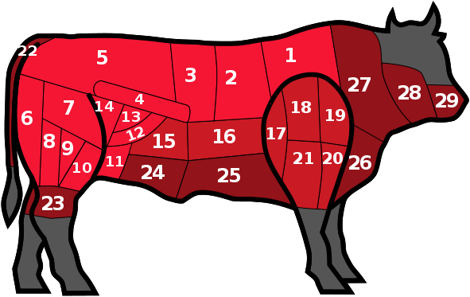

Choisir ses morceaux
Le Boeuf

Référons-nous au dessin du boeuf ci-dessus, afin d’identifier les morceaux de boeuf – ou pièce de boeuf –
par leur nom et sa découpe.
1 - Les basses-côtes se trouvent sur le haut du dos, derrière l’épaule. Sa viande est persillée et adapté
aux ragoûts, mais coupée en fines tranches elle peut être grillée.
2 - Les Côtes / Entrecôtes sont des parties tendres de l’animal et sont les meilleurs morceaux à griller
ou rôtir. L’entrecôte est une côte de bœuf désossée. La 7ème côte, un morceau de choix car très fondant,
est idéale pour les rosbif.
3 - Le Faux-filet, très tendre, est l’un des morceaux “nobles”. Plus fine que l’entrecôte, il est adapté à
être poêlé, grillé ou rôti.
4 - Le Filet est le morceau le plus tendre du bœuf mais pas toujours le plus goûteux. Il est idéal pour
les tournedos, les chateaubriands et biftecks.
5 - Le Rumsteck est tendre et savoureux, bien pour faire un pavé ou des brochettes
6 - Rond de Gîte : situé à l’arrière de la cuisse, il s’agit d’une viande tendre et très maigre, pour une
consommation cru en tartare ou carpaccio ainsi que des plats mijotés.
7 - La Poire et Le merlan : deux découpes fondants, idéales pour faire un bifteck ou un fondue
8 - Gîte à la Noix : une viande de muscle adaptée aux plats braisés ou mijotés
9 - L’Araignée s’appelle ainsi car ce morceau est composé de fibres longs comme des pattes d’araignée. Ce
morceau, destiné aux biftecks, nécessite un travail de boucher. Il doit le dénerver, c’est-à-dire retirer
les parties nerveuses qui sont désagréables à manger.
10 - Plat de Tranche est un morceau situé sur le devant de la cuisse utilisé pour faire des rôtis comme le
rosbif
11 - La Bavette d’Aloyau, un morceau très apprécié pour la confection de savoureux biftecks
12 - La Hampe, située sur la ventre du bœuf, est un morceau très tendre utilisée pour faire les biftecks.
Un morceau “noble”, il doit être détaillé par le boucher.
13 - L’Onglet, comme la Hampe, est un morceau du ventre qu’on appelle “morceau de boucher”, nécessitant un
travail de préparation. Il est aussi utilisé pour les biftecks et grillades.
14 - L’Aiguillette baronne s’appelle ainsi car historiquement le morceau était réservé aux riches,
confectionné en “bœuf mode” à la cocotte. Morceau de la cuisse, aujourd’hui il est servi en steaks à
griller ou à poêler.
15 - La Bavette de Tranchet, très similaire à la bavette d’aloyau, se fait grillée ou poêlée notamment
pour La Bavette aux Échalotes.
16 - Le Plat de Côte et le Tendron, deux morceaux qui sont adaptés aux marinades. Le plat de côte, près de
l’os, et servi en pot-au-feu ou d’autres bouillades.
17 - La Macreuse à bifteck est tendre, et comme son nom laisse présager elle s’utilise pour faire des
steaks, grillés ou poêlés.
18 - Le Paleron est un morceau d’épaule qui est ferme et gélatineuse. Il est bien adapté aux plats mijotés
ou braisés comme le bœuf aux carottes.
19 - Le Jumeau à bifteck, situé sur le devant de l’épaule, se prépare en bifteck, à griller ou à
poêler.
20- Le Jumeau à pot-au-feu, juste derrière le jumeau à bifteck sur l’épaule, est plus gélatineuse. Comme
la macreuse, ce morceau s’utilise dans les plats mijotés : la daube, de bourguignon, le pot-au-feu.
21 - La Macreuse à pot-au-feu est bien entendu, souvent utilisée dans le pot-au-feu ainsi que les plats
braisés et ragoûts. Moins tendre que la macreuse à bifteck, il est parfait aussi pour faire un Hachis
Parmentier.
22 - La Queue de Bœuf, vous ne serez pas surpris de l’apprendre, est un morceau composé de l’os de la
queue ainsi que la viande l’entourant. Assez gras comme morceau, il doit mijoter très longtemps pour
l’attendrir, dans un potage par exemple.
23 - La Gîte, appelé aussi Jarret, est un morceau avec une viande moelleuse et gélatineuse qui s’utilise
en pot-au-feu.
24 - Le Flanchet est une viande assez ferme et grasse, adaptée au pot-au-feu.
25 - Le Tendron est une grande pièce de bœuf pesant jusqu’à 10kg. Long et plat, il se découpe en tranches
fines idéales pour les grillages et barbecues. Le milieu de la poitrine, aussi une partie ventrale du
bœuf, se présente roulé et ficelé.
26 - Le Gros bout de poitrine se trouve sous l’épaule, et présent une viande “entrelardée”, c’est-à-dire
une mélange de gras et de maigre. Ce morceau est utilisé pour les pot-au-feu et plats braisés.
27 - Le collier est le morceau situé à l’avant de l’épaule, juste derrière sa tête. Une viande maigre,
c’est souvent utilisé pour les daubes, ragoûts et pots-au-feu. Ce morceau résistent bien aux cuissons
lentes, permettant ainsi à la viande de devenir plus fondante.
28 - Le Plat de joue, un morceau très ferme, est souvent utilisé pour les plats à braiser ou le
bourguignon
29 - La Langue est considérée comme un abat. Cuisinée en entière, elle est braisée et servie en sauce.